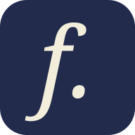

打好语法基础
中文解释与法语例句，把规则讲清楚。

法语通关登录基础法语 · TCF Canada
用中文理解语法，在阅读和练习中学会表达。
使用 ChatGPT 登录，开始学习了解学习内容一步一步，学以致用
中文解释与法语例句，把规则讲清楚。
读原创短文，从重点句回到对应知识。
围绕考试任务，组织口语回答与写作草稿。
本版聚焦基础、口语和写作；TCF Canada 还包含听力与阅读。
面向中文母语的基础法语学习者，以及希望练习 TCF Canada 口语、写作的学习者。你可以按课程循序学习，也可以直接进入备考任务。
进度、错题和草稿保存在当前浏览器，不自动跨设备同步。你可以在学习空间导出、导入备份。ChatGPT 登录用于访问，不代表已开通云同步。共用设备时，请留意本地学习档案。
课程参考本机学习资料整理，文章与模拟题为原创，并非官方真题。考试要求记录官方来源；教学内容待教师复核。当前没有 AI 批改或发音评分，也不预测官方成绩。